Cartas
System Cards
Recuperación
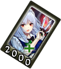Video (Activa los subtítulos)
| ¿Qué hace? | ¿Cuanto Cuesta? |
|---|---|
| Una system card para recuperar la salud perdida. | 2000 |
- Nivel 1: Cura 250 puntos de vida.
- Nivel 2: Cura 260 puntos de vida.
En Pasivo: Regenera vida lentamente mientras luchas. - Nivel 3: Cura 270 puntos de vida.
En Pasivo: Regenera el doble de vida mientras luchas. - Nivel 4: Cura 280 puntos de vida.
En Pasivo: Regenera el triple de vida mientras luchas.
Nuevo Álbum de Cartas
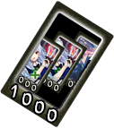| ¿Qué hace? | ¿Cuanto Cuesta? |
|---|---|
| Reinicia tú deck y obten un nuevo deck de cinco cartas. La reducción de costos no se aplica cuando usas tu carta de system card. |
1000 |
- Nivel 1: Reinicia tú Deck.
- Nivel 2: Reinicia tú Deck.
En Pasivo: Usar las cartas cuesta un 10% menos de energía. - Nivel 3: Reinicia tú Deck.
En Pasivo: Usar las cartas cuesta un 20% menos de energía. - Nivel 4: Reinicia tú Deck.
En Pasivo: Usar las cartas cuesta un 30% menos de energía.
Potenciador Danmaku
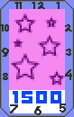| ¿Qué hace? | ¿Cuanto Cuesta? |
|---|---|
| Una system card que recarga tu barra de Danmaku convirtiendo el poder. Cuando se usa, su barra permanece al máximo durante 8 segundos y no puede ganar energía mientras dura este efecto, más tres segundos adicionales después de que finaliza. |
1500 |
- Nivel 1: La barra permanece al máximo durante 8 segundos.
- Nivel 2: La barra permanece al máximo durante 9 segundos.
En Pasivo: Tu barra se carga un poco más rápido mientras luchas. - Nivel 3: La barra permanece al máximo durante 10 segundos.
En Pasivo: Tu barra se carga más rápido mientras luchas. - Nivel 4: La barra permanece al máximo durante 11 segundos.
En Pasivo: Tu barra se carga aún más rápido mientras luchas.
Skill Cards
Cuchillos Más Afilados

| ¿Qué hace? |
|---|
| Aumenta la producción de daño de los movimientos de cuchillo ofensivos. |
| ¿En Qué Afecta? |
|---|
| Magic Star Knife |
| Intervention |
| Aimed Ricochet |
| Clock Corpse |
| Legcutter |
- Magic Star Knife: Más Daño
- Intervention: Más Daño
- Aimed Ricochet: Más Daño, Movimiento Más Rápido
- Clock Corpse: Más Daño, Los Cuchillos Se Activan Más Rápido
- Legcutter: Más Daño
Dominio del Cuchillo
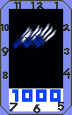| ¿Qué hace? |
|---|
| Aumenta la efectividad de los movimientos de cuchillo que no están enfocados en hacer mucho daño. |
| ¿En Qué Afecta? |
|---|
| Bounce No-Bounce |
| Ceiling Bonuce |
| Sense of Thrown Edge |
| Prepared for Everything |
| Crossup Magic |
- Bounce No-Bounce: +3 cuchillos/nivel, cubriendo un área grande.
- Ceiling Bonuce: +3 cuchillos/nivel, cubriendo un área grande.
- Sense of Thrown Edge: +1 cuchillos/nivel.
- Prepared for Everything: Los cuchillos comienzan a moverse aleatoriamente durante un intervalo de tiempo/nivel más amplio.
- Crossup Magic - Nivel 1: Los cuchillos bloquean los ataques fisicos normales.
- Crossup Magic - Nivel 2: Bloquea los ataques fisicos normales y especiales.
- Crossup Magic - Nivel 3: Bloquea los ataques fisicos normales,especiales y agarres normales.
- Crossup Magic - Nivel 4: Bloquea cualquier ataque que no sea de spell.
Manipulación Avanzada del Tiempo
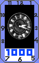| ¿Qué hace? |
|---|
| Mejora las habilidades relacionadas con el espacio-tiempo. |
| ¿En Qué Afecta? |
|---|
| Perfect Maid |
| Desapareciendo Todo |
| Time Paradox |
| Sakuya's Special Stopwatch |
| Bonuce, Bonuce! |
| Quicktime |
- Perfect Maid: Todos los niveles aumentan el daño, el nivel 4 permite cancelar el movimiento a Desapareciendo Todo durante los cuadros activos y de enfriamiento ANTES de que el movimiento se active con un golpe.
- Desapareciendo Todo: Nv1 permite su uso en el aire. Todos los niveles reducen los marcos vulnerables de inicio en 1.
- Time Paradox: Todos los niveles reducen el tiempo de inicio, lo que le permite cancelar otro ataque más rápido.
- Sakuya's Special Stopwatch: El proyectil se ralentiza junto con la oponente en contacto.
- Bonuce,Bonuce!: El proyectil se ralentiza junto con la oponente en contacto.
- Quicktime: El proyectil se ralentiza junto con la oponente en contacto.
Recursos Extendidos del Hogar
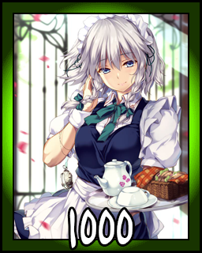| ¿Qué hace? |
|---|
| Una criada siempre debe estar preparada. |
| ¿En Qué Afecta? |
|---|
| Aumenta la capacidad máxima de la barra de danmaku en un 12,5% en cada nivel. |
Jefa de Limpieza

| ¿Qué hace? |
|---|
| Una criada debe poder servir incluso cuando está en malas condiciones. |
| ¿En Qué Afecta? |
|---|
| Cuando la salud es del 40% o menos, recupera el 15% del costo de energía para cada nivel después de usar una Spell o Skill Card. Este descuento es acumulativo multiplicativamente con el descuento por spells declarados o New Card Album. |
Spell Cards
Señal del Tiempo "Destiny Draw"
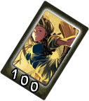| ¿Qué hace? | ¿Cuanto Cuesta? |
|---|---|
| Al crear una conexión con su yo futuro, obtenga acceso a su reserva de energía futura. Una vez completada la preparación, debe seleccionar y usar una carta (Puede ser una carta declarada), no usar una carta cancelará el efecto. Usar Destiny Draw nuevamente no hará nada, pero contará como usar una carta e incurrirá en un costo de energía futuro de 500. Inmediatamente antes de usar la card, obtienes energía igual a su costo de energía, que se gastará en usar la card. Después de una cierta cantidad de tiempo transcurrido, pierdes energía igual a la cantidad ganada. Si no tiene tanta energía disponible en ese momento, seguirá perdiendo energía hasta que pierda la misma cantidad. La card no se puede volver a utilizar antes de que expire la duración del primer uso. Destiny Draw no funciona cuando otro Sakuya lo usa a través de Time Paradox, el costo de energía del lanzamiento usado por ese Sakuya se gastará de tu barra de energía de manera normal. |
500 |
- Nivel 1: Obtener energía de 60 segundos en el futuro.
- Nivel 2: Obtener energía de 90 segundos en el futuro.
- Nivel 3: Obtener energía de 120 segundos en el futuro.
- Nivel 4: Obtener energía de 150 segundos en el futuro.
"Doppelganger"
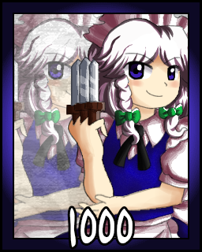| ¿Qué hace? | ¿Cuanto Cuesta? |
|---|---|
| Cambia de lugar con tu futuro yo. Puede controlar la posición en la que aparece su yo futuro de la misma manera que en Desapareciendo Todo. No se puede declarar ni subir de nivel. No se puede usar más de una vez en cada ronda. Obtenga salud completa de inmediato y pierda todo el poder, pero comience la siguiente ronda con su cantidad actual de salud y poder. Cuando se encadena a Destiny Draw, el costo de energía futuro también se aplicará al comienzo de la siguiente ronda en lugar del tiempo habitual. Como Doppelganger ya proporciona una conexión muy firme entre el tiempo del presente y el futuro, el uso de esta cadena en realidad GENERA energía en lugar de costar nada. |
1000 |
- Nota1: Esta no es una excepción, ya que aún se aplica la regla de los hechizos encadenados que cuestan 1000 de poder menos, en lugar del costo normal de 500, costará -500, en otras palabras, ganas 500 de poder. La ganancia se aplicará después de que Doppelganger establezca su poder en 0, por lo que tendrá exactamente 500 después de esta cadena.
- Nota2: Se puede encadenar a: Destiny Draw
Conjurando "Eternal Meek"
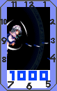| ¿Qué hace? | ¿Cuanto Cuesta? |
|---|---|
| Un ataque violento que arroja muchos cuchillos afilados. Es algo lento de arrancar y arriesgado pero hace buen daño. No se puede proteger mientras está de pie y no agrega carga cuando se usa. La carga actual ha reducido a la mitad el efecto sobre el daño de este ataque. |
1000 |
- Nivel 1: Daño más bajo.
- Nivel 2: Más daño y daño bloqueado.
- Nivel 3: Aún más daño y daño bloqueado.
- Nivel 4: Mayor daño y daño bloqueado.
Imagen de Ilusión "Luna Clock"
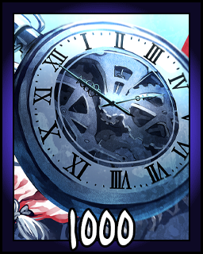| ¿Qué hace? | ¿Cuanto Cuesta? |
|---|---|
| Lanza un cronómetro al oponente. Al golpear, el oponente queda congelado en el tiempo. |
1000 |
- Nivel 1: Agrega 25% de carga.
- Nivel 2: Añadir 15% de carga.
- Nivel 3: Añadir 5% de carga.
- Nivel 4: Reduce la carga en un 5%.
"Portera de la Mansión"
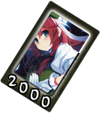| ¿Qué hace? | ¿Cuanto Cuesta? |
|---|---|
| Convoca a Hong Meiling. | 2000 |
- Nivel 1: PS y daños más bajos.
- Nivel 2: Más PS y daño.
- Nivel 3: Aún más PS y daño.
- Nivel 4: Máximo PS y daño.
"Mundo de Sakuya"
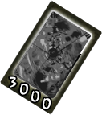| ¿Qué hace? | ¿Cuanto Cuesta? |
|---|---|
| Detiene el tiempo. Aumenta la amortiguación de daños al 25%. | 3000 |
- Nivel 1: 7 segundos de duración, carga mínima 25%.
- Nivel 2: 8 segundos de duración, carga mínima 22% y reduce ligeramente la carga mientras está en efecto.
- Nivel 3: 9 segundos de duración, carga mínima 19% y reduce la carga mientras está en efecto.
- Nivel 4: 10 segundos de duración, carga mínima 16% y reduce rápidamente la carga mientras está en efecto.
Señal de Velocidad "Luminous Ricochet"
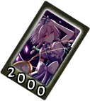| ¿Qué hace? | ¿Cuanto Cuesta? |
|---|---|
| Lanza un cuchillo a una velocidad extremadamente alta que rebota durante un rato antes de girar hacia el oponente para dar un golpe poderoso. Este movimiento es muy difícil de evitar porque no puedes saber cuándo te atacará el cuchillo. |
2000 |
- Nivel 1: 165 daños, 22 daños bloqueados, ataques con cuchillo a los 4 segundos transcurridos.
- Nivel 2: 187 daños, 22 daños bloqueados, ataques con cuchillo entre 3-4 segundos.
- Nivel 3: 209 daños, 22 daños bloqueados, ataques con cuchillo entre 2-4 segundos.
- Nivel 4: 231 daños, 22 daños bloqueados, ataques con cuchillo entre 1-4 segundos.
Señal de Herida "Inscribe Red Soul"
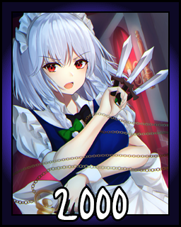| ¿Qué hace? | ¿Cuanto Cuesta? |
|---|---|
| Un rápido ataque cortante. Invencible a los ataques cuerpo a cuerpo durante toda su duración. |
2000 |
- Nivel 1: Daño más bajo.
- Nivel 2: Más daño y daño bloqueado.
- Nivel 3: Aún más daño y daño bloqueado.
- Nivel 4: Mayor daño y daño bloqueado.
Alma Cicatrizada "Soul Sculpture"
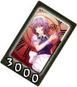| ¿Qué hace? | ¿Cuanto Cuesta? |
|---|---|
| Lo mismo que la carta anterior pero más poderoso. | 3000 |
- Nivel 1: Daño más bajo.
- Nivel 2: Más daño y daño bloqueado.
- Nivel 3: Aún más daño y daño bloqueado.
- Nivel 4: Mayor daño y daño bloqueado.
Señal de Ilusión "Killing Doll"
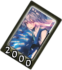| ¿Qué hace? | ¿Cuanto Cuesta? |
|---|---|
| Rodéate de muchos cuchillos que pueden bloquear proyectiles durante un corto período de tiempo y luego lanzarlos directamente al oponente. | 2000 |
- Nivel 1: Daño Más Bajo.
- Nivel 2: Mas Daño.
- Nivel 3: Aún Más Daño.
- Nivel 4: Mayor Daño.
Señal Secreto "Phantomic Killer"
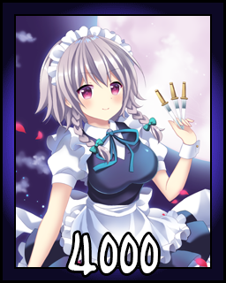| ¿Qué hace? | ¿Cuanto Cuesta? |
|---|---|
| Haz llover miles de cuchillos sobre el oponente mientras eres invencible. | 4000 |
- Nivel 1: 240 daños, 180 daños bloqueados.
- Nivel 2: 330 daños, 210 daños bloqueados.
- Nivel 3: 420 daños, 240 daños bloqueados.
- Nivel 4: 510 daños, 270 daños bloqueados.
"Sangre Fantasmal de la Criada Perfecta"
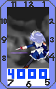| ¿Qué hace? | ¿Cuanto Cuesta? |
|---|---|
| Sakuya realiza un corte veloz antes de congelar el tiempo y cortarlos varias veces, entregando una patada final que provoca un rebote en la pared. | 4000 |
- Esta Card es exclusivo de este juego.
- Tiene el Popularity Boom hecho por un usuario de Soundcloud: Tewa.
Assistant Cards
Señal del Tiempo "Private Square"
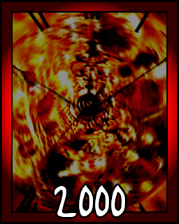| ¿Qué hace? | ¿Cuanto Cuesta? |
|---|---|
| Una assistant card para ralentizar el tiempo de todos los oponentes. Como todos los demás movimientos de manipulación del tiempo, esto no tiene efecto mientras se golpea a Sakuya. |
2000 |
- Nivel 1: Ralentiza a los enemigos en un 20%.
- Nivel 2: Ralentiza a los enemigos en un 30%.
- Nivel 3: Ralentiza a los enemigos en un 40%.
- Nivel 4: Ralentiza a los enemigos en un 50%.
Señal de Arresto de Tiempo "Lady of Time"
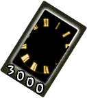| ¿Qué hace? | ¿Cuanto Cuesta? |
|---|---|
| Detener el tiempo siempre que no se esté atacando. | 3000 |
- Nivel 1: El tiempo se detiene mientras estás abajo solo.
- Nivel 2: El tiempo se detiene mientras estás cayendo o es derribada.
- Nivel 3: Todo lo anterior y también al usar Vanishing Everything.
- Nivel 4: Todo lo anterior y también mientras está inactivo, excepto cuando está en guardia. Este efecto no funciona contra jugadores humanos.
Señal de Tiempo "Quicktime"
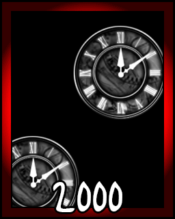| ¿Qué hace? | ¿Cuanto Cuesta? |
|---|---|
| Una assistant Card que genera proyectiles de ralentización del tiempo similares al Cronómetro especial de Sakuya pero del doble de tamaño. | 2000 |
- Nivel 1: El proyectil aparece cada 12 segundos.
- Nivel 2: El proyectil aparece cada 6 segundos.
- Nivel 3: El proyectil aparece cada 4 segundos.
- Nivel 4: El proyectil aparece cada 3 segundos.